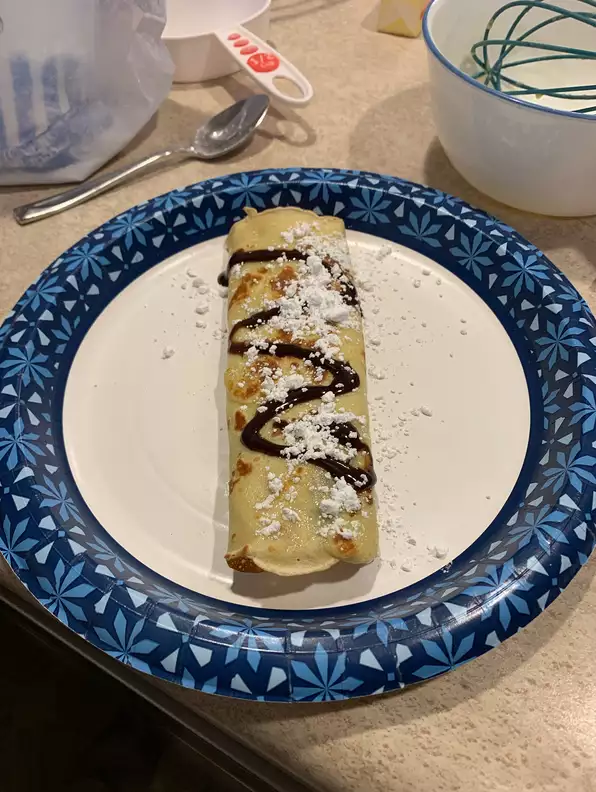

Dessert Crepes

Description
Essential crepe recipe. Sprinkle warm crepes with sugar and lemon, or serve with cream or ice cream and fruit.
Ingredients
- 4 eggs, lightly beaten
- 1 1/3 cups milk
- 2 tablespoons butter, melted
<1i>1 cup all-purpose flour
- 2 tablespoons white sugar
- 1/2 teaspoon salt
Steps
- In large bowl, whisk together eggs, milk, melted butter, flour sugar and salt until smooth.
- Heat a medium-sized skillet or crepe pan over medium heat. Grease pan with a small amount of butter or oil applied with a brush or paper towel.
- Using a serving spoon or small ladle, spoon about 3 tablespoons crepe batter into hot pan, tilting the pan so that bottom surface is evenly coated.
- Cook over medium heat, 1 to 2 minutes on a side, or until golden brown. Serve immediately.